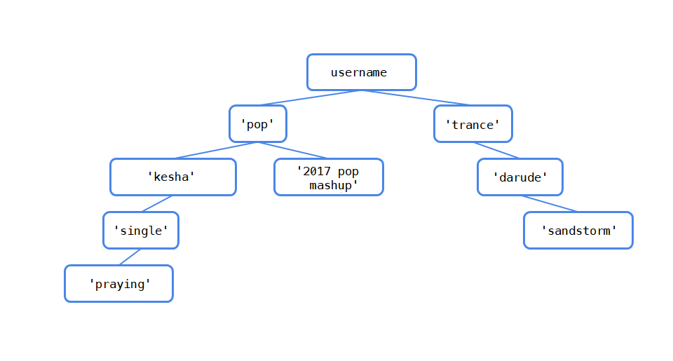

Homework 5
Due by 11:59pm on Sunday, 10/23/16
Instructions
Download hw05.zip. Inside the archive, you will find a file called hw05.py, along with a copy of the OK autograder. Upload the zip file to Jupyter to complete the assignment. See Lab 0 for instructions on using Jupyter to complete assignments.
Submission: When you are done, submit the assignment by uploading the .py file to okpy.org. You may submit more than once before the deadline; only the final submission will be scored. See Lab 0 for instructions on submitting assignments.
Readings: This homework relies on following references:
More Trees: pyTunes
The CS88 staff has created a music library called pyTunes. pyTunes organizes songs in folders that are labeled by category — in other words, in a tree! The value at the root of the tree is your account name, which branches out into a hierarchy of categories: genres, artists, and albums, in that order. Songs (leaves in the tree) can be stored at any of these levels. A category cannot be empty (i.e. there will never be a node for a genre, artist, or album with no branches).
Question 1: Create pyTunes
All pyTunes accounts come with the free songs below. Define the function make_pytunes, which takes in username and creates this tree:

The doctest below shows the print_tree representation of a default pyTunes tree.
def make_pytunes(username):
"""Return a pyTunes tree as shown in the diagram with USERNAME as the value
of the root.
>>> pytunes = make_pytunes('i_love_music')
>>> print_tree(pytunes)
i_love_music
pop
justin bieber
single
what do you mean?
2015 pop mashup
trance
darude
sandstorm
"""
"*** YOUR CODE HERE ***"Use OK to test your code:
python ok -q make_pytunes --localQuestion 2: Number of Songs
A pyPod can only hold 10 songs, and you need to find out whether or not all the songs in your pyTunes account will fit. Define the function num_songs, which takes in a pyTunes tree t and returns the number of songs in t. Recall that there are no empty directories in pyTunes, so all leaves in t are songs.
Hint: You can use is_leaf to check whether a given tree is a leaf.
>>> no_branches = tree(1)
>>> is_leaf(no_branches)
True
>>> is_leaf(tree(5, [tree(3), tree(4)]))
Falsedef num_songs(t):
"""Return the number of songs in the pyTunes tree, t.
>>> pytunes = make_pytunes('i_love_music')
>>> num_songs(pytunes)
3
"""
"*** YOUR CODE HERE ***"Use OK to test your code:
python ok -q num_songs --localQuestion 3: Ctrl + F
In order to check if your pyTunes account contains a certain song or category, define the function find. It takes in a pyTunes tree t and returns True if t contains a either a song or a category called target and False otherwise.
def find(t, target):
"""Returns True if t contains a node with the value TARGET and False
otherwise.
>>> my_account = tree('kpop_king',
... [tree('korean',
... [tree('gangnam style'),
... tree('wedding dress')]),
... tree('pop',
... [tree('t-swift',
... [tree('blank space')]),
... tree('uptown funk'),
... tree('see you again')])])
>>> find(my_account, 'korean')
True
>>> find(my_account, 'blank space')
True
>>> find(my_account, 'bad blood')
False
"""
"*** YOUR CODE HERE ***"Use OK to test your code:
python ok -q find --localQuestion 4: Add Song
Of course, you should be able to add music to your pyTunes. Write add_song to add song to the given category. You should not be able to add a song under a song or to a category that doesn't exist. See the doctests for examples.
def add_song(t, song, category):
"""Returns a new tree with SONG added to CATEGORY. Assume the CATEGORY
already exists.
>>> indie_tunes = tree('indie_tunes',
... [tree('indie',
... [tree('vance joy',
... [tree('riptide')])])])
>>> new_indie = add_song(indie_tunes, 'georgia', 'vance joy')
>>> print_tree(new_indie)
indie_tunes
indie
vance joy
riptide
georgia
"""
"*** YOUR CODE HERE ***"Use OK to test your code:
python ok -q add_song --localQuestion 5: Delete
You also want to be able to delete a song or category from your pyTunes. Define the function delete, which takes in a pyTunes tree t and returns a new tree that is the same as t except with target deleted. If target is a genre, artist, or album, delete everything inside of it. It should not be possible to delete the entire account or root of the tree. Deleting all the songs within a category should not remove that category.
def delete(t, target):
"""Returns the tree that results from deleting TARGET from t. If TARGET is
a category, delete everything inside of it.
>>> my_account = tree('kpop_king',
... [tree('korean',
... [tree('gangnam style'),
... tree('wedding dress')]),
... tree('pop',
... [tree('t-swift',
... [tree('blank space')]),
... tree('uptown funk'),
... tree('see you again')])])
>>> new = delete(my_account, 'pop')
>>> print_tree(new)
kpop_king
korean
gangnam style
wedding dress
"""
"*** YOUR CODE HERE ***"Use OK to test your code:
python ok -q delete --localMutation
Question 6
In lecture, we saw how to use functions to create mutable objects.
Here, for example, is the function make_withdraw which produces a
function that can withdraw money from an account:
def make_withdraw(balance):
"""Return a withdraw function with BALANCE as its starting balance.
>>> withdraw = make_withdraw(1000)
>>> withdraw(100)
900
>>> withdraw(100)
800
>>> withdraw(900)
'Insufficient funds'
"""
def withdraw(amount):
nonlocal balance
if amount > balance:
return 'Insufficient funds'
balance = balance - amount
return balance
return withdrawWrite a version of the make_withdraw function that returns
password-protected withdraw functions. That is, make_withdraw should
take a password argument (a string) in addition to an initial balance.
The returned function should take two arguments: an amount to withdraw
and a password.
A password-protected withdraw function should only process
withdrawals that include a password that matches the original. Upon
receiving an incorrect password, the function should:
- Store that incorrect password in a list, and
- Return the string 'Incorrect password'.
If a withdraw function has been called three times with incorrect
passwords p1, p2, and p3, then it is locked. All subsequent
calls to the function should return:
"Your account is locked. Attempts: [<p1>, <p2>, <p3>]"The incorrect passwords may be the same or different:
def make_withdraw(balance, password):
"""Return a password-protected withdraw function.
>>> w = make_withdraw(100, 'hax0r')
>>> w(25, 'hax0r')
75
>>> w(90, 'hax0r')
'Insufficient funds'
>>> w(25, 'hwat')
'Incorrect password'
>>> w(25, 'hax0r')
50
>>> w(75, 'a')
'Incorrect password'
>>> w(10, 'hax0r')
40
>>> w(20, 'n00b')
'Incorrect password'
>>> w(10, 'hax0r')
"Your account is locked. Attempts: ['hwat', 'a', 'n00b']"
>>> w(10, 'l33t')
"Your account is locked. Attempts: ['hwat', 'a', 'n00b']"
"""
"*** YOUR CODE HERE ***"Use OK to test your code:
python ok -q make_withdraw --localQuestion 7
Suppose that our banking system requires the ability to make joint
accounts. Define a function make_joint that takes three arguments.
- A password-protected
withdrawfunction, - The password with which that
withdrawfunction was defined, and - A new password that can also access the original account.
The make_joint function returns a withdraw function that provides
additional access to the original account using either the new or old
password. Both functions draw down the same balance. Incorrect
passwords provided to either function will be stored and cause the
functions to be locked after three wrong attempts.
Hint: The solution is short (less than 10 lines) and contains no string
literals! The key is to call withdraw with the right password and amount,
then interpret the result. You may assume that all failed attempts to withdraw
will return some string (for incorrect passwords, locked accounts, or
insufficient funds), while successful withdrawals will return a number.
Use type(value) == str to test if some value is a string:
def make_joint(withdraw, old_password, new_password):
"""Return a password-protected withdraw function that has joint access to
the balance of withdraw.
>>> w = make_withdraw(100, 'hax0r')
>>> w(25, 'hax0r')
75
>>> make_joint(w, 'my', 'secret')
'Incorrect password'
>>> j = make_joint(w, 'hax0r', 'secret')
>>> w(25, 'secret')
'Incorrect password'
>>> j(25, 'secret')
50
>>> j(25, 'hax0r')
25
>>> j(100, 'secret')
'Insufficient funds'
>>> j2 = make_joint(j, 'secret', 'code')
>>> j2(5, 'code')
20
>>> j2(5, 'secret')
15
>>> j2(5, 'hax0r')
10
>>> j2(25, 'password')
'Incorrect password'
>>> j2(5, 'secret')
"Your account is locked. Attempts: ['my', 'secret', 'password']"
>>> j(5, 'secret')
"Your account is locked. Attempts: ['my', 'secret', 'password']"
>>> w(5, 'hax0r')
"Your account is locked. Attempts: ['my', 'secret', 'password']"
>>> make_joint(w, 'hax0r', 'hello')
"Your account is locked. Attempts: ['my', 'secret', 'password']"
"""
"*** YOUR CODE HERE ***"Use OK to test your code:
python ok -q make_joint --local